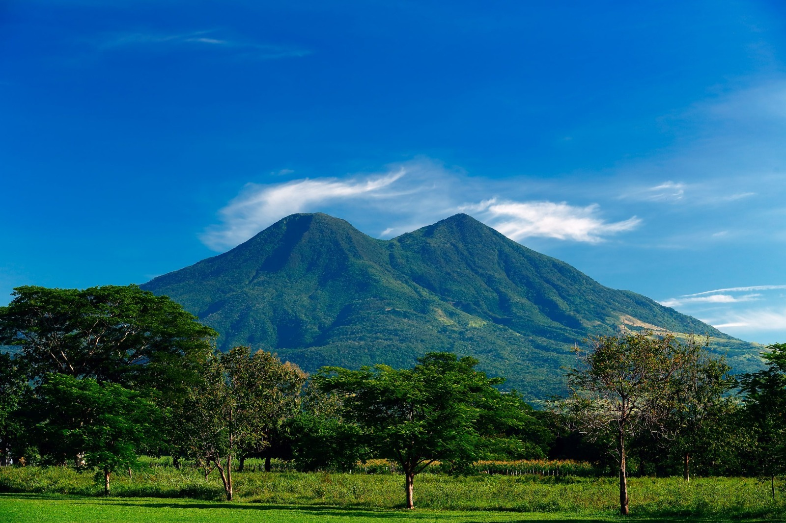

Una de las ciudades más antiguas del país,
con edificaciones históricas y tradición cultural arraigada.

Volcán Chinchontepec
Conocido como el volcán de San Vicente, destaca por sus dos cumbres características.
Es un punto de referencia geográfico y destino para caminatas de montaña.